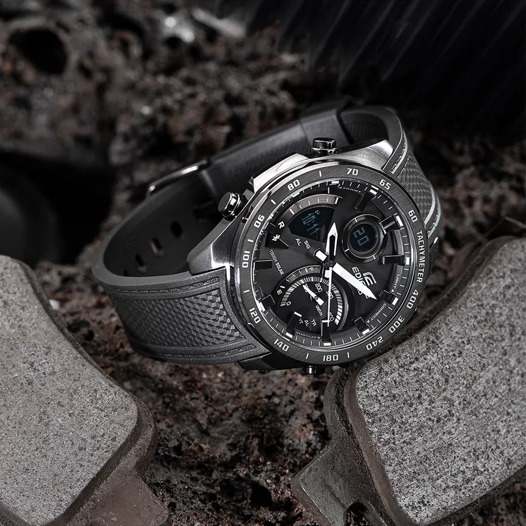

Основание компании Casio в Токио.
Since 1946 · Japan
CASIO
Время, которое остается актуальным.
Casio соединяет инженерную точность Японии с дизайном, который переживает эпохи. Каждая модель — диалог между формой, функцией и характером.
- Японское качество Точность сборки и надёжность, знакомые миллионам.
- Инновации Технологии, которые служат каждый день — без лишнего шума.
- Легендарный дизайн Силуэт, который узнают с первого взгляда.
Избранная модель
Икона коллекции
Модель, в которой сходятся стиль 80-х и удобство на каждый день — если ищете «те самые» Casio без лишнего шума.
Best choice

Vintage
AQ-230
Аналого-цифровой дизайн в духе Casio 80-х: тонкий корпус, тёплый циферблат и металлический браслет. Идеальный баланс ностальгии и повседневного комфорта.
ПодробнееАтмосфера
Галерея
Форма, свет и деталь — визуальный язык Casio в крупных кадрах.

История
Наследие Casio
Путь длиною почти в 80 лет — от первых электронных устройств до часов, ставших легендой.
Выпуск Casiotron, первых в мире цифровых часов с автоматическим календарем.
Появление G-SHOCK и рождение новой категории сверхпрочных часов.
Запуск серии PRO TREK для путешествий и активного отдыха.
Появление EDIFICE, вдохновленной миром автоспорта.
Выход G-SHOCK GA-2100, ставших одной из самых популярных моделей бренда.
Casio представлена более чем в 100 странах и продолжает создавать часы, объединяющие технологии и надежность.
1946
год основания
100+
стран присутствия
50+
лет производства часов
Миллионы
пользователей по всему миру